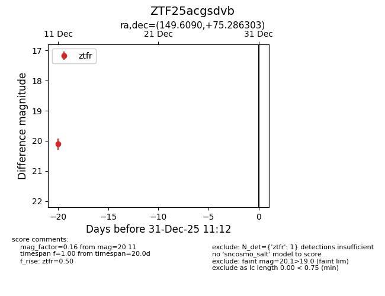
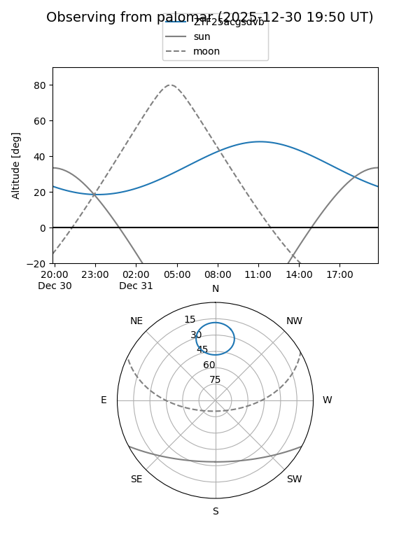

ZTF25acgsdvb
Target ZTF25acgsdvb at 2025-12-18 11:18
Aliases and brokers:
FINK: fink-portal.org/ZTF25acgsdvb
Lasair: lasair-ztf.lsst.ac.uk/objects/ZTF25acgsdvb
ALeRCE: alerce.online/object/ZTF25acgsdvb
alt names
ZTF25acgsdvb (ztf,fink_ztf)
Coordinates:
equatorial (ra, dec) = 149.6090,+75.28630
equatorial (HMS+DMS) = 09:58:26.17,+75:17:10.69
galactic (l, b) = (135.5652,+37.27749)
Photometry
last ztfr=20.11
1 ztfr detections
Lightcurve

Visibility


Additional plots